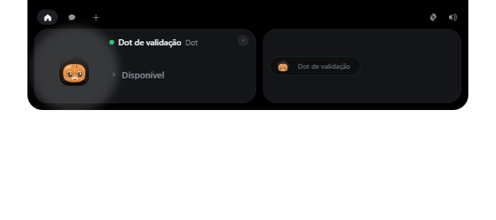

Seu Dot, seu contexto
Conversas e espaços organizados por projeto. Retome o trabalho sem procurar por terminais e configurações.
Dê uma direção aos seus Dots. Converse, acompanhe seus agentes e continue o trabalho entre o computador e o celular.
Projeto em desenvolvimento · Versões de avaliação

Capturas do aplicativo com dados de demonstração. A disponibilidade dos recursos depende da versão.
Comece pela conversa. Abra os detalhes quando precisar.
Conversas e espaços organizados por projeto. Retome o trabalho sem procurar por terminais e configurações.
Terminais, arquivos e atividade em abas e painéis. Expanda seu workspace conforme a tarefa pede.
Pedidos de acesso e estados claros ajudam a entender o que está acontecendo e o que precisa de você.

A barra flutuante reúne seus Dots e acessos para conversa, Canvas e aprovações. Seu visual utiliza a ilha original do Coucou com os personagens SENTRA.
Conheça o Coucou
O aplicativo móvel conecta você ao seu host SENTRA. Conecte pela sua rede local ou por uma VPN privada entre os aparelhos, sem depender de um relay público.
No Canvas, abra Dispositivos, ative a conexão LAN / VPN e exiba o QR Code temporário.
Instale a versão disponível, entre na mesma rede Wi-Fi ou VPN privada e escaneie o QR. Na VPN, selecione no desktop o endereço da interface alcançável pelo celular.
Confira o pedido e aprove o pareamento. O dispositivo tem identidade própria e pode ser revogado.
Guia de pareamento e diagnóstico da rede ↗
Os builds de avaliação ainda precisam de homologação em Android e iPhone físicos. A presença de um download não significa conclusão dessa validação. O acesso por VPN exige que os aparelhos alcancem diretamente o endereço privado do host. A configuração da VPN pertence à sua rede.
Downloads publicados são vinculados à versão e aos respectivos arquivos de verificação.
O APK aparecerá aqui quando o build de avaliação estiver publicado.
Baixar APK Versão, assinatura e SHA-256 ↗O acesso será disponibilizado por TestFlight ou distribuição Apple assinada. Ainda não há um aplicativo instalável publicado para iPhone.
Abrir TestFlight ↗Acompanhar versões ↗Confira as prévias do instalador, notas da versão e requisitos antes de instalar ou atualizar.
Ver versões do Windows ↗A prévia instalada localmente pode ser mais recente que o último setup publicado.
Carregando disponibilidade dos downloads…
Esta é a página de apresentação e downloads. Seus Dots e conversas são acessados no aplicativo conectado ao seu host.
A conexão é direta por LAN ou VPN privada. O SENTRA não exige relay público. Os aparelhos devem alcançar o endereço do host; a VPN não substitui o pareamento e as permissões do dispositivo.
Ainda não temos uma conta Apple Developer nem um canal de distribuição iOS configurado. O download do iPhone será habilitado quando houver uma versão assinada disponível.
Consulte o README, os créditos e as instruções no repositório do SENTRA. Reporte problemas com a versão e as etapas para reproduzi-los.